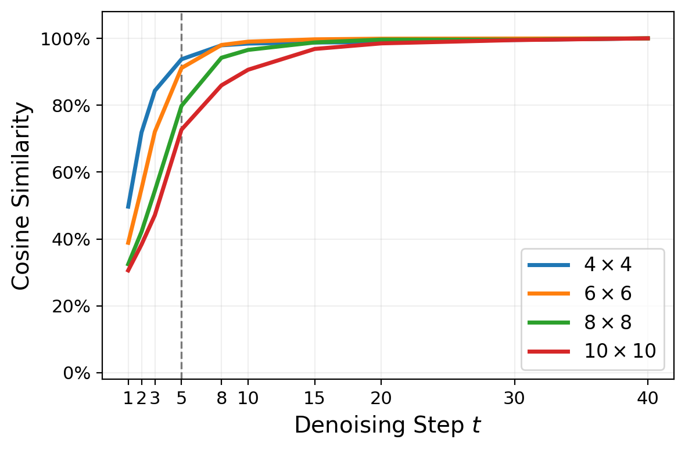
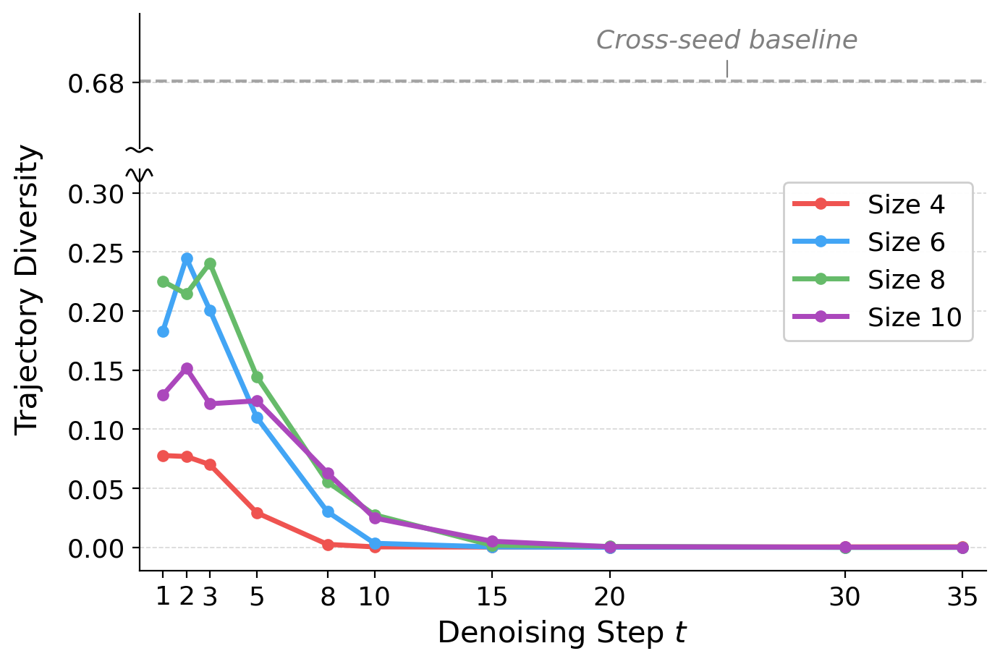
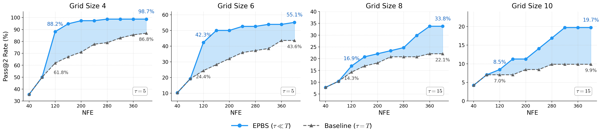
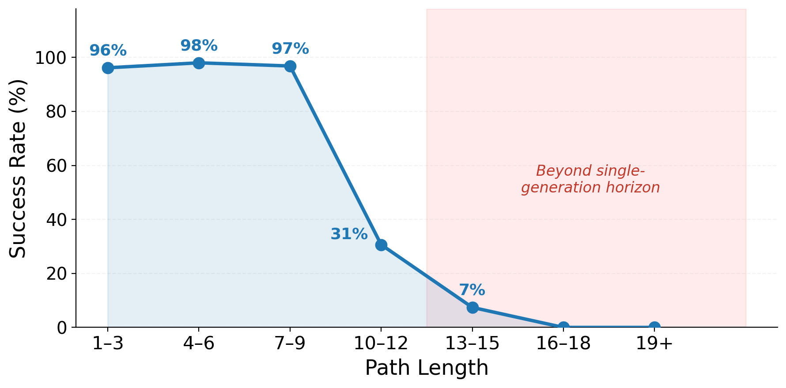
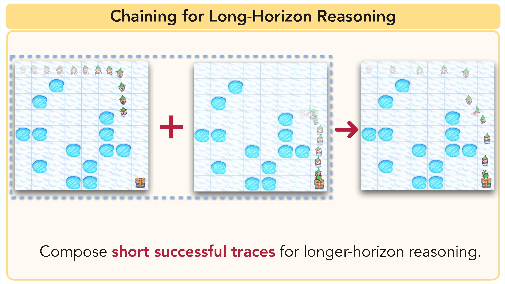
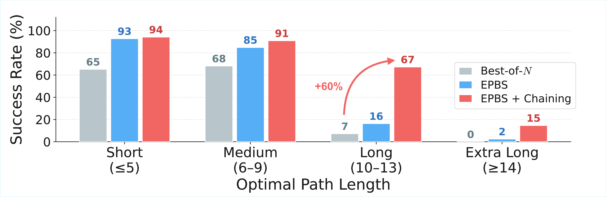

Video generation models have demonstrated emergent reasoning capabilities like solving mazes, puzzles, and physical reasoning tasks without task-specific training.
Yet despite growing interest, we lack a basic understanding of how such reasoning emerges during generation and how reliably we can elicit it.
We study the internal planning dynamics of video models using maze-solving as a controlled testbed. We discover
early plan commitment: video diffusion models
commit to a high-level motion plan within the first few denoising steps,
after which further denoising alters visual details but not the underlying
trajectory.
We exploit this to build ChEaP (Chaining with Early Planning), improving accuracy from
7% to 67% on long mazes and by 2.5× overall on hard tasks.
Video Models Can Reason
Given just an image of a maze and a text prompt (hover to see!), off-the-shelf video diffusion models can successfully generate solutions to complex mazes
across a range of diverse visual settings [1].
Frozen Lake Prompt
Animate the elf moving step by step toward the gift while carefully avoiding the icy frozen lake. Highlight the successful path and end with the elf touching the gift. There are no changes to the layout of the maze. No new lakes or characters appear. Static camera. No zoom. No pan. No glitches, noise, or artifacts.
Frozen Lake Prompt
Animate the elf moving step by step toward the gift while carefully avoiding the icy frozen lake. Highlight the successful path and end with the elf touching the gift. There are no changes to the layout of the maze. No new lakes or characters appear. Static camera. No zoom. No pan. No glitches, noise, or artifacts.
Frozen Lake Prompt
Animate the elf moving step by step toward the gift while carefully avoiding the icy frozen lake. Highlight the successful path and end with the elf touching the gift. There are no changes to the layout of the maze. No new lakes or characters appear. Static camera. No zoom. No pan. No glitches, noise, or artifacts.
VR-Bench Maze Prompt (Skin 1)
Create a 2D animation based on the provided image of a maze. The red circle slides smoothly along the white square path, stopping perfectly on the green square. The red circle never slides or crosses into the light blue square areas of the maze. The camera is a static, top-down view showing the entire maze.
Maze: The maze paths are white square, the walls are light blue square. The red circle moves to the goal position, represented by green square. The red circle slides smoothly along the white square path. The red circle never slides or crosses into the light blue square areas of the maze. The red circle stops perfectly on the green square.
Scene: No change in scene composition. No change in the layout of the maze. The red circle travels along the white square path without speeding up or slowing down.
Camera: Static camera. No zoom. No pan. No glitches, noise, or artifacts.
VR-Bench Maze Prompt (Skin 2)
Create a 2D animation based on the provided image of a maze. The white rabbit slides smoothly along the green grass tiles path, stopping perfectly on the orange carrots. The white rabbit never slides or crosses into the gray rock areas of the maze. The camera is a static, top-down view showing the entire maze.
Maze: The maze paths are green grass tiles, the walls are gray rock. The white rabbit moves to the goal position, represented by orange carrots. The white rabbit slides smoothly along the green grass tiles path. The white rabbit never slides or crosses into the gray rock areas of the maze. The white rabbit stops perfectly on the orange carrots.
Scene: No change in scene composition. No change in the layout of the maze. The white rabbit travels along the green grass tiles path without speeding up or slowing down.
Camera: Static camera. No zoom. No pan. No glitches, noise, or artifacts.
VR-Bench Maze Prompt (Skin 4)
Create a 2D animation based on the provided image of a maze. The anime schoolgirl slides smoothly along the wooden floor tiles path, stopping perfectly on the green square. The anime schoolgirl never slides or crosses into the gray stone wall areas of the maze. The camera is a static, top-down view showing the entire maze.
Maze: The maze paths are wooden floor tiles, the walls are gray stone wall. The anime schoolgirl moves to the goal position, represented by green square. The anime schoolgirl slides smoothly along the wooden floor tiles path. The anime schoolgirl never slides or crosses into the gray stone wall areas of the maze. The anime schoolgirl stops perfectly on the green square.
Scene: No change in scene composition. No change in the layout of the maze. The anime schoolgirl travels along the wooden floor tiles path without speeding up or slowing down.
Camera: Static camera. No zoom. No pan. No glitches, noise, or artifacts.
But success is unreliable. Most random seeds produce failed trajectories, and performance degrades
rapidly with maze complexity. Standard best-of-N sampling helps, but wastes massive compute
fully denoising every candidate. Can we understand how these models reason internally
and use that to elicit better performance?
The Plan Is Decided Early
By decoding intermediate predictions during denoising, we discover that the model's motion trajectory
is already committed within the first few steps. Later steps refine
visual fidelity but almost never change the underlying route.
Step 1 / 40
Step 2 / 40
Step 5 / 40
Step 10 / 40
Step 20 / 40
Final (40 / 40)
The plot on the left measures how similar the trajectory at each intermediate step is to the final output.
On size 4 mazes, by step 5 of 40, trajectories are 93% converged—the route is essentially decided, and the remaining
35 steps just refine rendering quality. This holds across all maze sizes.

Trajectory similarity to the final output at each denoising step, across maze sizes.

Trajectory diversity from refinement vs. different seeds. The dashed line shows cross-seed diversity.
A natural follow-up: can we get diverse trajectories by refining the same seed?
Refinement, i.e., re-noising an intermediate prediction and continuing denoising, is a common technique
for sample diversity in flow matching. We find it produces at most 25% trajectory diversity, compared to 68%
between entirely different seeds (dashed line). The trajectory is encoded in the initial noise,
and refinement cannot change it.
If early trajectories predict final success, then inference-time compute should screen more candidate trajectories rather than fully denoising every seed.
This insight motivates Early Planning Beam Search (EPBS): instead of fully denoising every seed, we partially denoise
a large pool of candidates for just a few steps, decode their early trajectory plans, and score them with a
lightweight verifier. Only the top-K candidates are fully denoised—the rest are discarded, saving the
vast majority of compute. Under a fixed budget of function evaluations, EPBS screens far more candidate
trajectories than standard best-of-N: for example, 73 candidates vs. 10 at 400 NFEs.
Screening Diverse Candidate Plans
Different noise seeds produce strikingly different motion plans on the same maze.
Failed paths appear as gray silhouettes; the successful trajectory in vivid color.
4×4 Maze
6×6 Maze
8×8 Maze
Each video above visualizes decoded early predictions from multiple noise seeds on the same maze.
This is exactly what EPBS does at inference time: it reveals early trajectory plans and uses a
lightweight verifier to promote the best one. Only the top-scoring candidates are fully denoised—the
rest are discarded after just a few steps.

EPBS consistently outperforms best-of-N sampling, matching its accuracy at 3.3× fewer function evaluations.
What Makes a Maze Hard?
Path length—not obstacle density—is the dominant predictor of difficulty.
Models reliably solve short paths but face a sharp cliff beyond 10–12 steps.

EPBS success rate drops sharply once the path exceeds the single-generation horizon.
8×8, Short Path (3 moves) Solved
6×6, Long Path (10 moves) Failed
The 8×8 maze on the left has a short 3-move solution and is solved cleanly. The 6×6 maze on the right
requires 10 moves—exceeding what the model can fit in a single generation. Rather than producing a
valid partial trajectory, it “cheats” by moving the gift closer.
This motivates decomposing long-horizon tasks into shorter sub-problems.
Chaining for Long-Horizon Reasoning
When a maze exceeds the model's horizon, we chain sequential generations—each
picking up where the last left off. Together with EPBS, this forms
ChEaP (Chaining with Early Planning).

Chaining reconditions on the last valid frame to extend reasoning beyond the single-generation horizon.
After each generation, we extract the agent's furthest valid position and use that frame
as the next starting condition. On mazes with path lengths of 10–13, chaining boosts
accuracy from 7% to 67%, demonstrating that the model possesses strong local planning
ability that was previously hidden by the generation length bottleneck.

ChEaP provides the largest gains where EPBS is bottlenecked by the generation horizon.
Chained 6×6 Solved
Chained 8×8 Solved
VR-Bench Solved
Gallery
Successes, diverse trajectories, and failure cases across Frozen Lake and VR-Bench.
Successes
4×4 Solved
6×6 Solved
8×8 Solved
10×10 Solved
Trajectory Exploration
4×4 · Lake 20%
6×6 · Lake 65%
8×8 · Lake 80%
10×10 · Lake 65%
VR-Bench
Maze Skin 1 Solved
Maze Skin 3 Solved
Trapfield 2 Solved
Trapfield 4 Solved
Failure Cases
Lake Entry Failed
Wrong Path Failed
Out of Time Failed
10×10 Lake Entry Failed
References
Thaddäus Wiedemer, Yuxuan Li, Paul Vicol, Shixiang Shane Gu, Nick Matarese, Kevin Swersky, Been Kim, Priyank Jaini, and Robert Geirhos. "Video Models are Zero-Shot Learners and Reasoners." arXiv preprint arXiv:2509.20328, 2025. arXiv
BibTeX
@misc{newman2026videomodelsreasonearly,
title={Video Models Reason Early: Exploiting Plan Commitment for Maze Solving},
author={Kaleb Newman and Tyler Zhu and Olga Russakovsky},
year={2026},
eprint={2603.30043},
archivePrefix={arXiv},
primaryClass={cs.CV},
url={https://arxiv.org/abs/2603.30043},
}